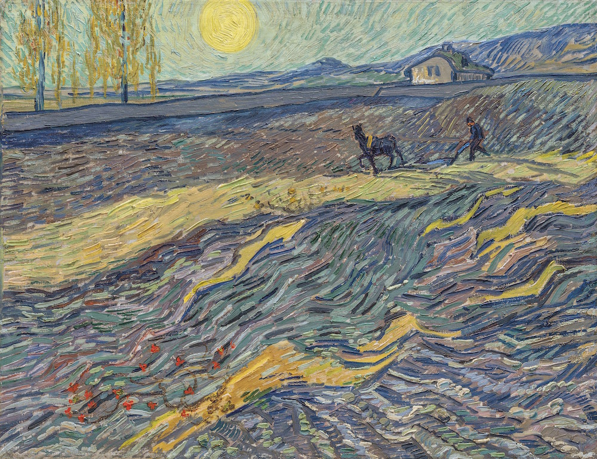
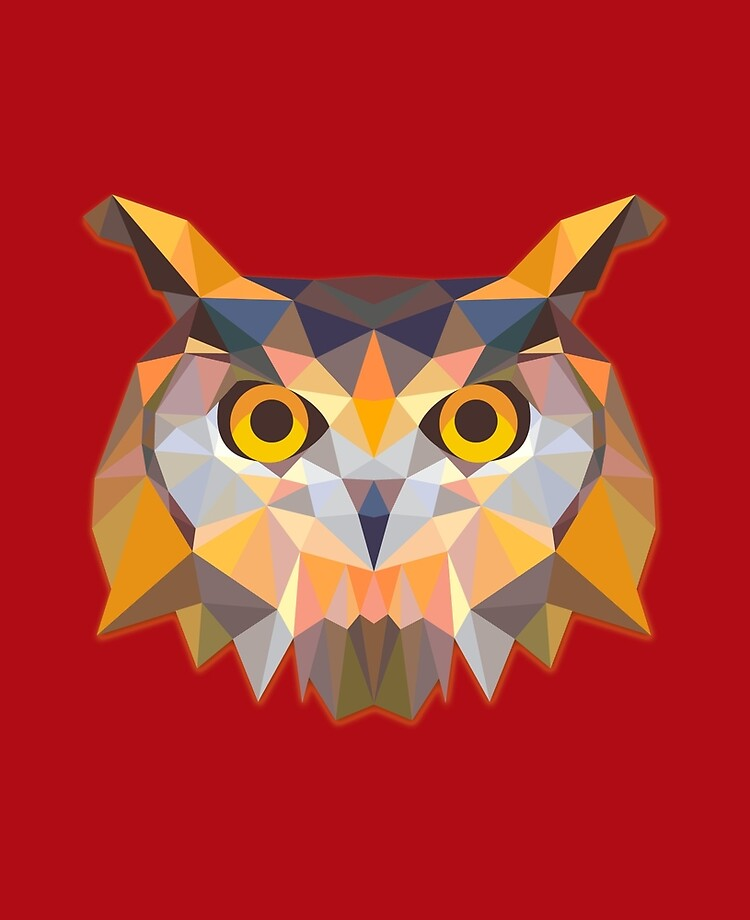
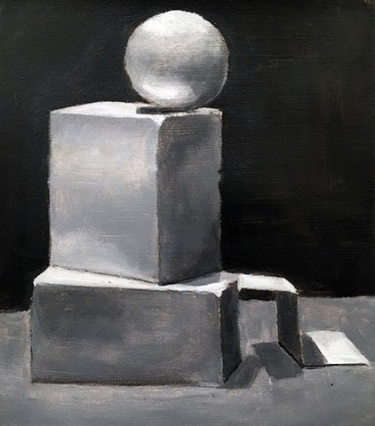
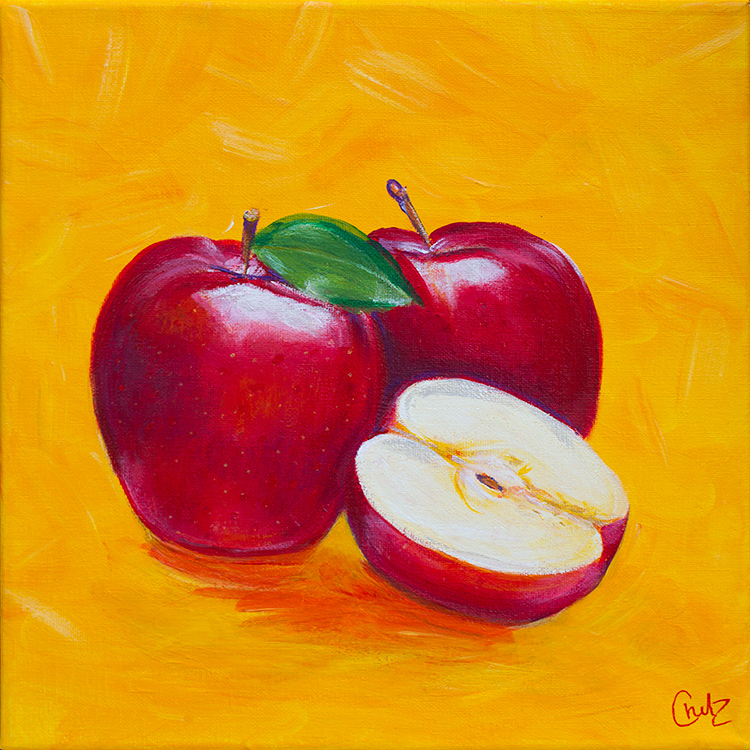
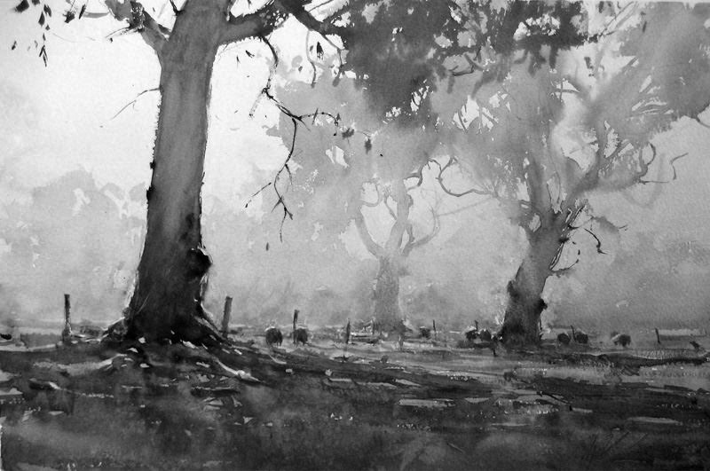

This webpage will teach you all about the elements of art! From what they are to how the look, the information provided will help improve your understandings of art.
Art is a way of expressing the artist's emotion and conveying it to an audience. It can be something visual, like a painting or a dance, or something you can sense like music or the taste of a cake.

| Name | Definition | Example |
|---|---|---|
| Line |
|
 |
| Shape |
|
 |
| Form |
|
 |
| Space |
|
 |
| Texture |
|
|
| Value |
|
 |
| Color |
|
| Line | Lineart Tips |
|---|---|
| Shape | How to Draw People |
| Form | How to Draw Form |
| Space | Learn to Draw Perspective |
| Texture | Painting Animal Fur |
| Value | Value Drawing |
| Color | Color Theory |